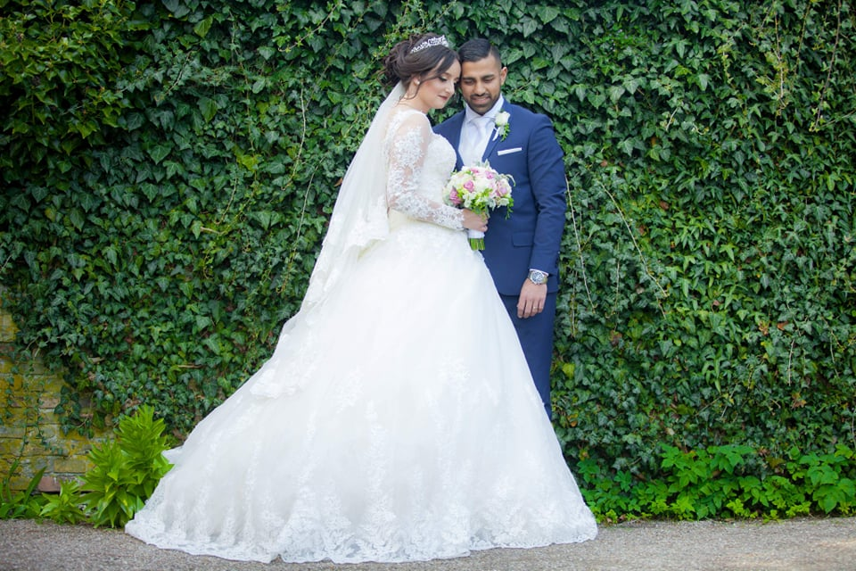

 Jeg hedder Yildiz og er 28 år gammel.
Jeg er halv tyrkisk og halv dansk i nationalitet.Til dagligt studerer jeg E-handel på cphbusiness, hvor jeg lærer at blive en god E-handler.
Jeg er gift med Haider og vi har sammen to børn, Zahra og Malik på 2 og 4 år.
-Så jeg bruger meget tid på legepladser og sjov barneleg.Når jeg ikke er mor
Der elsker jeg at gå ud og spise, opleve verden og rejse. Som alle andre voksne gør. Jeg finder ro i en god bog eller lange gåture med musik i ørerne.
Jeg elsker at udfolde min kreativitet, ved bl.a.. at gå all-in på pynt og aktiviteter, når der skal afholdes store festlige begivenheder. Derfor er jeg bl.a. den udnævnte event host når der skal afholdes noget blandt min familie eller venner.